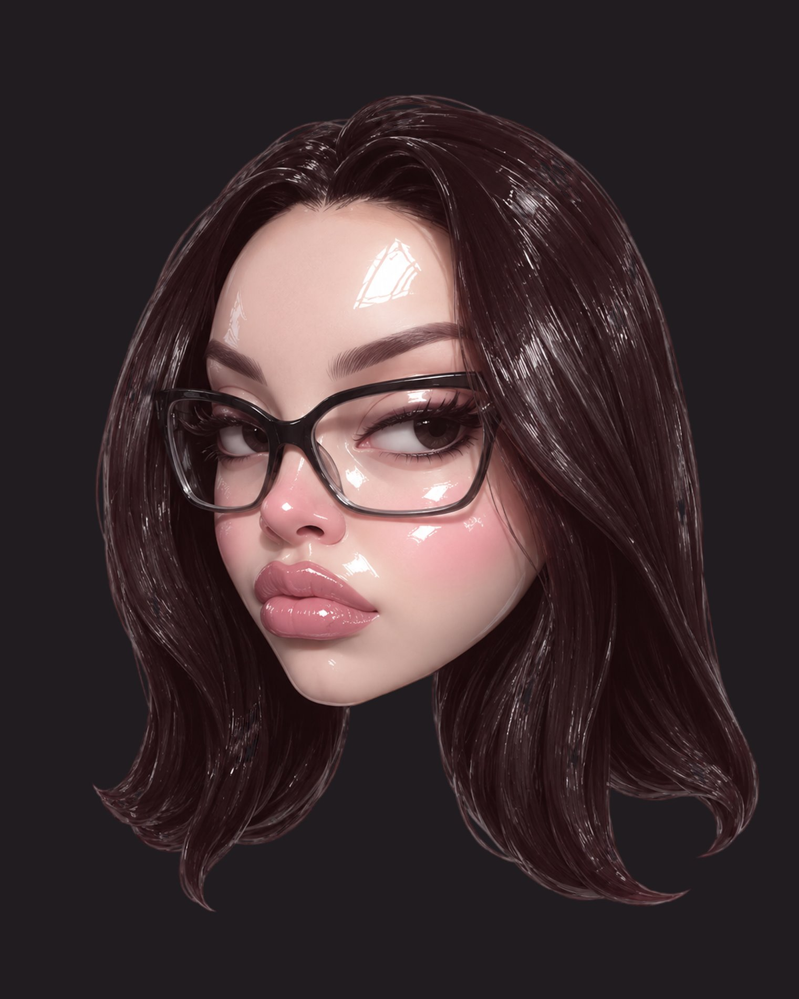

hero

я Надя и художник, специализирующийся на цифровой иллюстрации и создании художественных концепций для творческих проектов.
работаю с иллюстрацией, дизайном персонажей, концепт-артом и разработкой образов и концепций и подготавливаю работы для использования в качестве принтов на одежде и других носителях.
about me
мне интересно находить художественный язык, который помогает проекту стать более цельным и узнаваемым. я работаю не только с отдельным изображением, но и с тем, как идея, атмосфера и характер проекта могут быть переведены в образ и развиты в разных форматах. люблю работать с разными стилями и уровнем детализации — от простого минимализма до полноценных детальных иллюстраций и сложного рендера.
сформированный стиль помогает проекту быть более цельным и узнаваемым для аудитории. его можно последовательно развивать в обложках, социальных сетях, мерче, видео и других форматах, создавая единую основу для продвижения и дальнейшего развития проекта.
в своей работе я особенно ценю атмосферу, характер и ощущение истории. мне интересно создавать образы, которые помогают раскрыть настроение и внутренний мир проекта, сохраняя его индивидуальность.
my works
school girl illustration
некоторые свои иллюстрации я использую для создания авторских предметов одежды
skills
- цифровая иллюстрация
- дизайн персонажей
- концепт-арт
- разработка визуальных образов и концепций
- иллюстрации для обложек
- адаптация иллюстраций для принтов на одежде
- создание визуальных лупов
- редактирование и обработка изображений
languages
русский — родной язык
английский — свободное владение, подтверждённое дипломом о высшем образовании и сертификатом cambridge english: advanced (cae), подтверждающим уровень c1, grade b.
using ai
все представленные на сайте иллюстрации создаются и отрисовываются вручную без использования ai.
присутствие в медиа поле:
- ряд видео набрал несколько десятков тысяч просмотров в TikTok
- работы вызывают позитивный отклик зрителей в комментариях